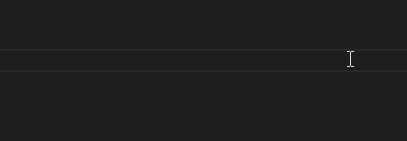
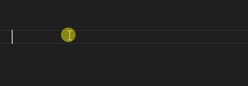

Tema 7Estilos en Cascada
Algo más que debes tener en cuenta es que en CSS los cambios se aplican en orden de cascada (de arriba a abajo). Esto quiere decir que si modificaste una propiedad de una división (o cualquier otro elemento) al principio y la vuelves a modificar al final del CSS, el estilo asignado será el último.
See the Pen cascade-ejemplo by Luis Yerik Arambula (@luis-yerik-arambula) on CodePen.
CodePen. Software utilizado para el desarrollo de ejercicio dinámico de programación. In CodePen. https://codepen.io
Este ejemplo nos muestra esto de dos maneras:
La clase naranja se modifica primero con el color blanco, pero al final con el color naranja y esto es lo que se visualiza.
La clase rojo también se aplica al segundo texto en el código HTML, pero como la clase naranja es la última del archivo CSS, esta es la que se ve.
Reto: Modifica el código CSS para que el segundo texto se muestre de color rojo, utilizando la clase rojo del código.
Divs en VS Code
VS Code nos permite escribir elementos <div> de manera rápida, para esto solo hay que escribir un punto . seguido del nombre de la clase que queremos asignarle a nuestra división, de esta manera:

Si quieres que sea con un ID, entonces en lugar de un punto utilizamos un #:

Puedes ver la lista completa de atajos haciendo clic  aquí.
aquí.